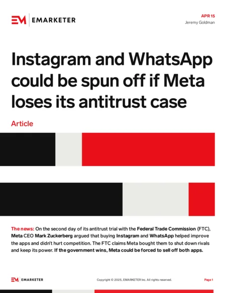
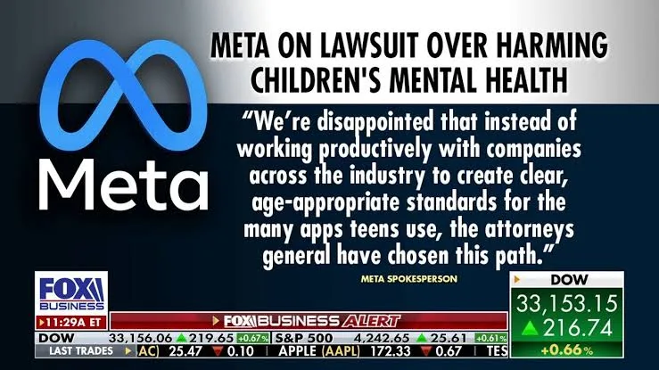

ആഗോള നിരോധന / നയ ട്രാക്കർ
കുട്ടികൾക്കായി സോഷ്യൽ മീഡിയ പോളിസികൾ കൊണ്ടുവന്ന രാജ്യങ്ങൾ.
| രാജ്യം / സംസ്ഥാനം | സ്റ്റാറ്റസ് | വിശദാംശം |
|---|---|---|
| 🇦🇺 ഓസ്ട്രേലിയ | ✅ നടപ്പിലാക്കി | 16 വയസ്സിൽ താഴെയുള്ളവർക്ക് നിരോധനം — ലോകത്തിലെ ആദ്യ മാതൃക |
| 🇲🇾 മലേഷ്യ | 🟡 നീങ്ങുന്നു | കുട്ടികൾക്കായി കർശന നിയന്ത്രണം പരിഗണനയിൽ |
| 🇩🇰 ഡെൻമാർക്ക് | 🟡 നീങ്ങുന്നു | സമാന നിയമം ചർച്ചയിൽ |
| 🇳🇴 നോർവേ | 🟡 നീങ്ങുന്നു | സമാന നിയമം ചർച്ചയിൽ |
| 🇬🇷 ഗ്രീസ് | 🟡 നീങ്ങുന്നു | സമാന നിയമം ചർച്ചയിൽ |
| 🇧🇷 ബ്രസീൽ | 🟡 നീങ്ങുന്നു | സമാന നിയമം ചർച്ചയിൽ |
| 🇮🇳 കർണാടക | ✅ പ്രഖ്യാപിച്ചു | സംസ്ഥാനതല നിയന്ത്രണങ്ങൾ |
| 🇮🇳 ആന്ധ്രാപ്രദേശ് | ✅ പ്രഖ്യാപിച്ചു | സംസ്ഥാനതല നിയന്ത്രണങ്ങൾ |
| 🇮🇳 ഇന്ത്യ (കേന്ദ്രം) | ⚪ ചർച്ചയിൽ | മദ്രാസ് ഹൈക്കോടതി ദേശീയ നിയമനിർമ്മാണം ശുപാർശ ചെയ്തു |
| 🟢 കേരളം | 🟡 ശുപാർശ ഘട്ടം | ബാലാവകാശ കമ്മീഷൻ 18 വരെ സ്ക്രീൻ നിയന്ത്രണം നിർദേശിച്ചു; 'D-DAD' നിലവിലുണ്ട് |
✅ നടപ്പിലാക്കി/പ്രഖ്യാപിച്ചു → 🟡 ചർച്ച/ശുപാർശ → ⚪ നടപടി ഇല്ല
പത്രവാർത്തകൾ
'കുട്ടിക്കളിയല്ല സോഷ്യൽ മീഡിയ' പഠന റിപ്പോർട്ട് ആഭ്യന്തര മന്ത്രിക്ക് സമർപ്പിച്ചത് ഉൾപ്പെടെയുള്ള ന്യൂസ് കട്ടിംഗ്സ്.


ഇംപാക്ട് / ഇഫക്ട്
1. Digital Degeneracy
അൽഗോരിതം സഹായത്തോടെ നഗ്നത, ലൈംഗിക ചുവയുള്ള ഉള്ളടക്കം കുട്ടികളിലേക്ക് എത്തുന്നു — ഡോപാമിൻ സിസ്റ്റം തകരാറിലാക്കുന്നു, അകാല ലൈംഗികവൽക്കരണം.
2. The Drug Trap
ലഹരി 'ആകർഷക ജീവിതശൈലി' ആയി അവതരിപ്പിക്കപ്പെടുന്നു. Prefrontal cortex പൂർത്തിയാകാത്ത ഘട്ടത്തിൽ impulsivity വർധിക്കുന്നു.
3. Violence & Behavioral Imitation
അക്രമാസക്ത ദൃശ്യങ്ങളുടെ തുടർച്ചയായ കാഴ്ച അനുകരണ പ്രവണത വർധിപ്പിക്കുന്നു — ഗ്യാങ് കൾച്ചറിലേക്ക് വഴിവെക്കുന്നു.
4. Behavioral Change
Echo Chamber വഴി Empathy കുറയുന്നു, Narcissistic traits വർധിക്കുന്നു; Likes/Shares വഴി കൃത്രിമ self-worth; Attention span കുറയുന്നു.
5. Reverse Flynn Effect & Cultural Erosion
Short-form content consumption ശ്രദ്ധയുടെ ദൈർഘ്യം കുറയ്ക്കുന്നു; നിയന്ത്രണമില്ലാത്ത exposure പ്രാദേശിക സംസ്കാരവുമായുള്ള ബന്ധം കുറയ്ക്കുന്നു.
ഡിടോക്സ് മീറ്റർ
ചെറിയ ചോദ്യങ്ങൾക്ക് ഉത്തരം നൽകൂ — അഡിക്ഷൻ ലെവൽ ഇതേ പേജിൽ കാണാം.
രക്ഷപ്പെടാനുള്ള വഴികൾ
- സ്ക്രീൻ ടൈം ലിമിറ്റ് സെറ്റ് ചെയ്യുക
- ഉറങ്ങുന്നതിന് മുൻപ് ഫോൺ മാറ്റിവെക്കുക
- Notification-കൾ ഓഫ് ചെയ്യുക
- ദിവസവും ഒരു 'No-Phone Hour'
- ഫിസിക്കൽ ഹോബികളിൽ ഏർപ്പെടുക
- കുടുംബവുമായി സമയം കൂട്ടുക
- ആപ്പ് യൂസേജ് ട്രാക്കിംഗ് ടൂൾ ഉപയോഗിക്കുക
- അക്കൗണ്ടുകൾ പീരിയോഡിക് ഡിടോക്സ്
- രക്ഷിതാക്കളോട് തുറന്ന് സംസാരിക്കുക
- ആവശ്യമെങ്കിൽ കൗൺസിലിംഗ് തേടുക
- Sexual Traps
- Violence Traps
- Financial Traps
- Drug Traps
- Cyberbullying
- Fake Identity / Catfishing
- Misinformation
- Comparison Trap
- Time-Sink (Infinite Scroll)
- Deepfake / AI Manipulation
- Focus Apps — Screen Time trackers, App blockers
- Digital Wellbeing ഫീച്ചറുകൾ സെറ്റ് ചെയ്യാനുള്ള ഗൈഡ്
- 10 അപകടങ്ങൾ (ഗെയിം അഡിക്ഷൻ)
- 'നിങ്ങളുടെ കുട്ടി അഡിക്റ്റ് ആണോ?' ചെക്ക്ലിസ്റ്റ്
- 10 സൊല്യൂഷൻസ് + സ്ക്രീൻ ടൈം ടൈമിംഗ് നിർദേശങ്ങൾ
പോഡ്കാസ്റ്റുകൾ
| # | വിഷയം | സ്പീക്കർ | ലിങ്ക് |
|---|---|---|---|
| 3 | ബോർ അടിക്കുമ്പോഴാണ് യഥാർത്ഥ Creativity — Boiling Frog മുതൽ Golden Fish Attention വരെ | Mridul M Mahesh, Athil Moideen | ▶ Watch |
| 4 | COVID ന് ശേഷം കുട്ടികൾക്ക് സംഭവിച്ചത് | Mridul M Mahesh, Athil Moideen | ▶ Watch |
| 7 | കുട്ടികളുടെ സ്ക്രീൻ ടൈം: രക്ഷിതാക്കൾ ഈ തെറ്റ് ചെയ്യരുത് | Mridul M Mahesh, Athil Moideen | ▶ Watch |
| 11 | നമ്മുടെ കുട്ടികൾ സോഷ്യൽ മീഡിയയിൽ സുരക്ഷിതരാണോ? — Deepfake, അൽഗോരിതം മാനിപ്പുലേഷൻ | Muhammed Aseel | ▶ Watch |
| 13 | മൊബൈൽ നിങ്ങളുടെ ജീവിതം നിയന്ത്രിക്കുന്നുണ്ടോ? — സ്ക്രീൻ ടൈമും ആരോഗ്യവും | Dr. P.P. Mohammed Musthafa | ▶ Watch |